15ਵੀਂ ਲੁਧਿਆਣਾ ਸਿੱਖ
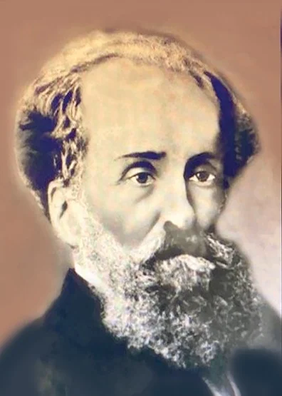
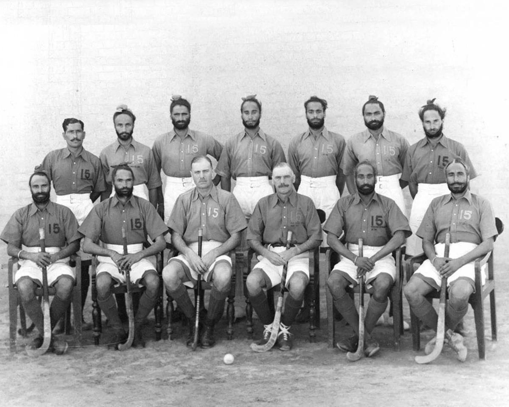
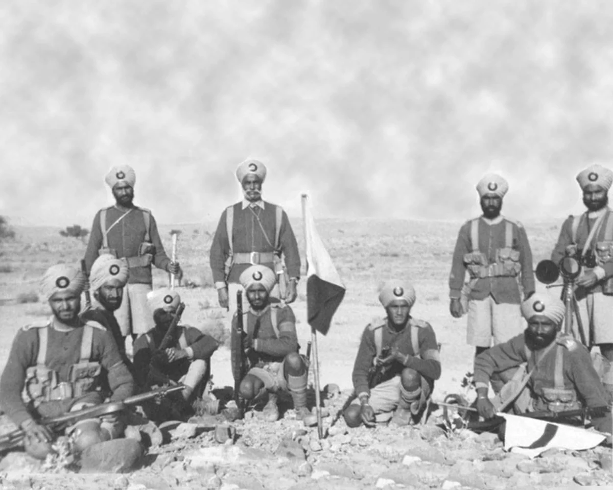
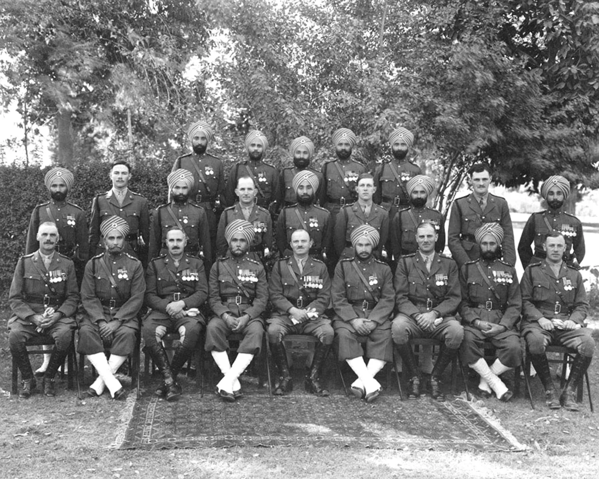
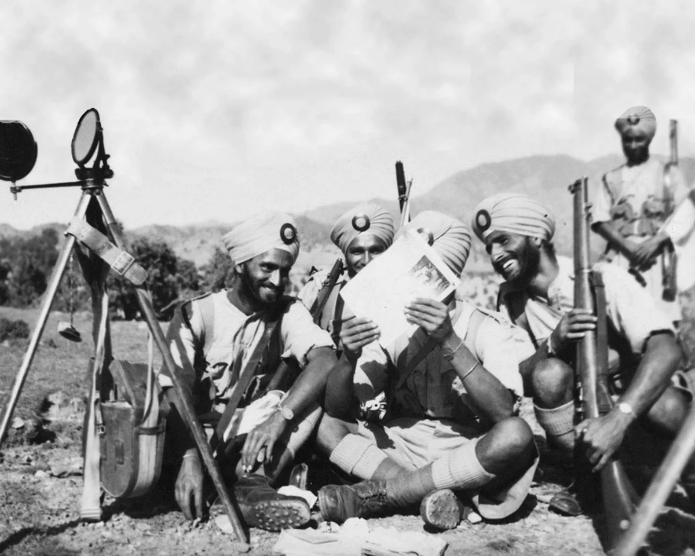
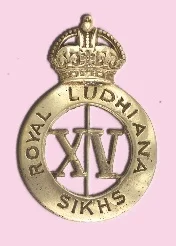
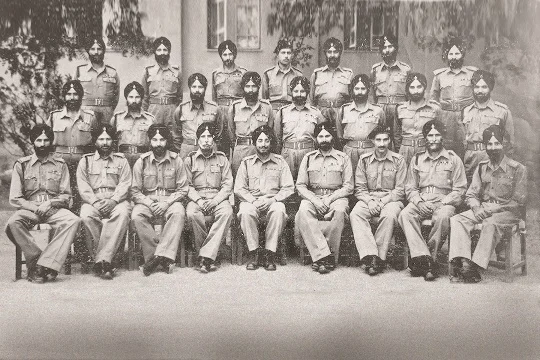
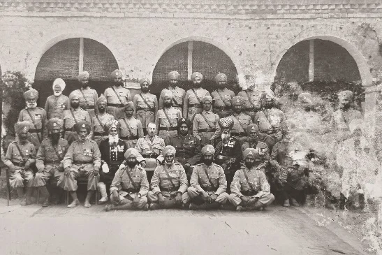
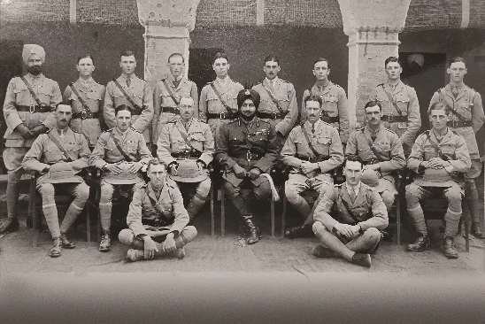
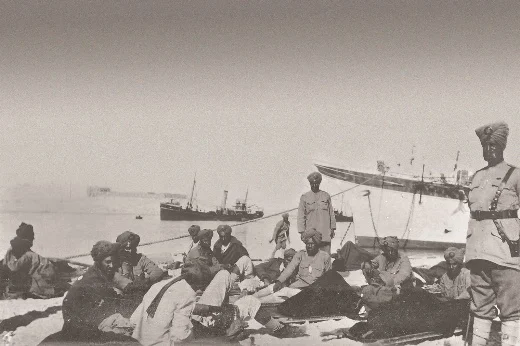
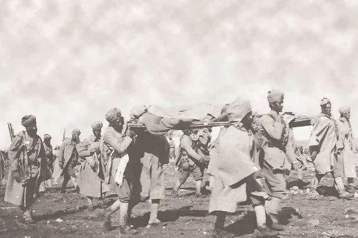
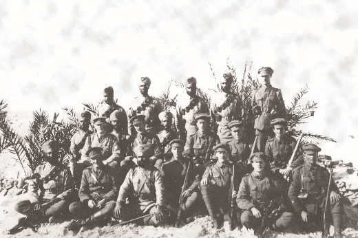
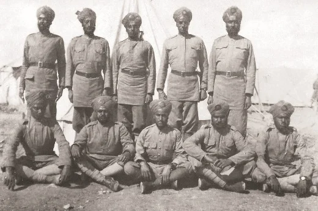
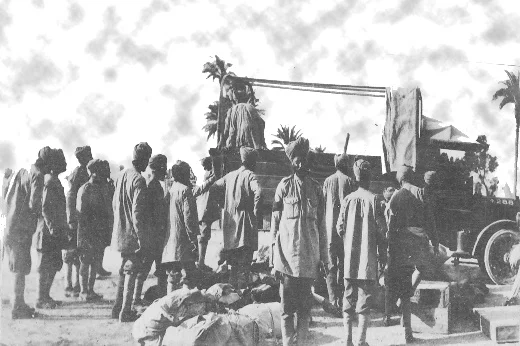
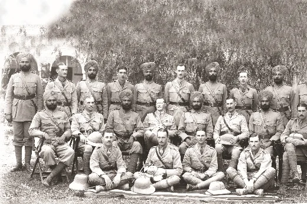
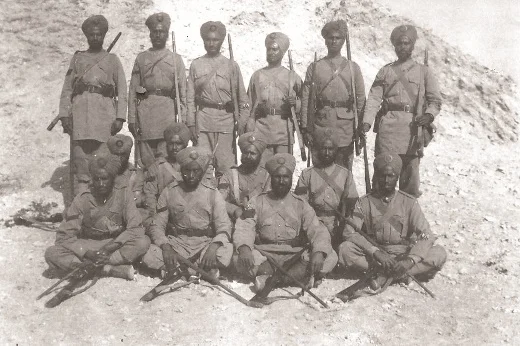
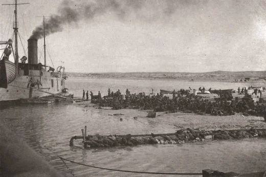
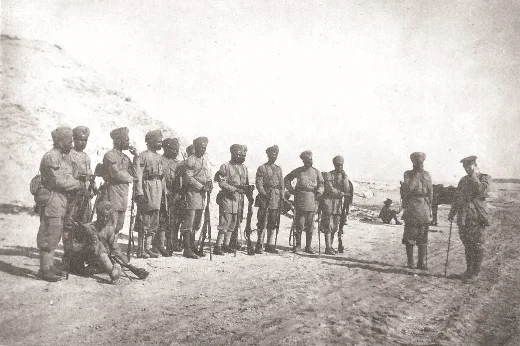
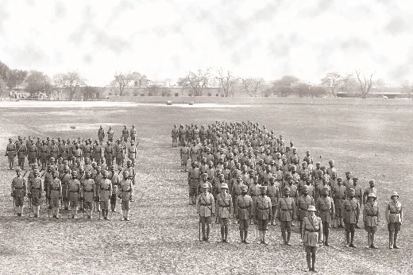
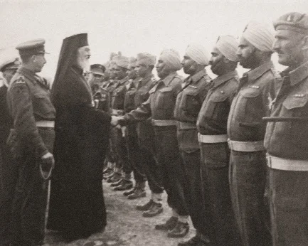
ਸ਼੍ਰੇਣੀ: ਉੱਤਰਾਧਿਕਾਰੀ ਬਟਾਲੀਅਨਾਂ
ਰੈਜੀਮੈਂਟ: ਸਿੱਖ ਰੈਜੀਮੈਂਟ
15ਵੀਂ ਲੁਧਿਆਣਾ ਸਿੱਖਾਂ, ਜਿਨ੍ਹਾਂ ਨੂੰ ਲੂਡਿਆਂਨਾ ਰੈਜਿਮੈਂਟ ਦੇ ਨਾਮ ਨਾਲ ਵੀ ਜਾਣਿਆ ਜਾਂਦਾ ਹੈ, 1 ਅਗਸਤ 1846 ਨੂੰ ਉਥਾਪਿਤ ਕੀਤਾ ਗਿਆ ਸੀ, ਜਿਸ ਵਿੱਚ ਪੰਜਾਬ ਦੇ ਮਲਵਾ ਅਤੇ ਮਾਝਾ ਖੇਤਰਾਂ ਦੇ ਵਿਘਟਿਤ ਖਾਲਸਾ ਫੌਜ ਦੇ ਸੈਣਿਕਾਂ ਨੂੰ ਦੁਬਾਰਾ ਭਰਤੀ ਕਰਕੇ ਇਸਟ ਇੰਡੀਆ ਕੰਪਨੀ ਦੀ ਬੈਂਗਲ ਆਰਮੀ ਵਿੱਚ ਸ਼ਾਮਲ ਕੀਤਾ ਗਿਆ। ਆਪਣੇ ਪਹਿਲੇ ਕਮਾਂਡੈਂਟ ਮੇਜਰ ਪੀ. ਗੋਰਡਨ ਹੇਠ, ਇਹ ਬਟਾਲੀਅਨ ਫੈਰੋਜ਼ਪੁਰ ਸਿੱਖਾਂ ਵਾਂਗ ਹੀ ਬਣਤਰ ਵਿੱਚ ਸੀ, ਜਿਸ ਵਿੱਚ ਬ੍ਰਿਟਿਸ਼ ਅਧਿਕਾਰੀ, ਵਾਇਸਰਾਇ ਦੀ ਕਮਿਸ਼ਨ ਵਾਲੇ ਅਧਿਕਾਰੀ ਅਤੇ ਹੋਰ ਰੈਂਕਾਂ ਸ਼ਾਮਲ ਸਨ। ਦੋ ਵਿੰਗਾਂ ਵਿੱਚ ਦਸ ਕੰਪਨੀਆਂ ਵਿੱਚ ਸੰਘਟਿਤ, ਉਸਦੇ ਫੌਜੀ ਆਪਣੀ ਪਗੜੀ ਨਾਲ ਵਿਲੱਖਣ ਤਰੀਕੇ ਨਾਲ ਪਛਾਣਯੋਗ ਸਨ, ਜਿਸ ਵਿੱਚ ਨੌਂ ਤੋਂ ਦਸ ਸਿਲਾਈਆਂ ਹੁੰਦੀਆਂ ਅਤੇ ਉੱਤੇ ਵੱਡਾ ਕੋਇਟ ਰੱਖਿਆ ਹੁੰਦਾ ਸੀ। 1922 ਵਿੱਚ, ਇਸ ਬਟਾਲੀਅਨ ਦਾ ਨਾਮ 2ਵੀਂ ਬਟਾਲੀਅਨ, 11ਵੀਂ ਸਿੱਖ ਰੈਜਿਮੈਂਟ ਰੱਖਿਆ ਗਿਆ, ਅਤੇ ਬਾਅਦ ਵਿੱਚ 1945 ਵਿੱਚ ਇਹ 2ਵੀਂ ਬਟਾਲੀਅਨ, ਸਿੱਖ ਰੈਜਿਮੈਂਟ ਬਣ ਗਈ।

ਮੋਬਾਈਲ 'ਤੇ ਖੋਲ੍ਹੋ
ਆਪਣੇ ਫ਼ੋਨ 'ਤੇ ਇਸ ਕਲਾ ਰਿਕਾਰਡ ਨੂੰ ਦੇਖਣ ਲਈ ਸਕੈਨ ਕਰੋ।